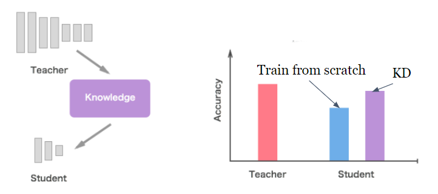

Knowledge distillation (KD)¶
What is Knowledge Distillation?¶
Goal¶
To Improve student’s accuracy with the help of a teacher model

Methods¶
We can divide KD methods into two categories by the learning targets
Distll logits (learning the output distribution of the teacher model)
ex: Deep Mutual learning, Soft-logits
Distll features (learning the intermediate value such as feature maps of the teacher model)
ex: FitNet, Distilling-Object-Detectors
How to choose student model¶
Student’s and teacher’s structure should be closely related
Reduce block number (Resnet block, transformer block)
Reduce hyperparameters (# of filters, size of filters, stride … etc)
Use more efficient structure (replace conv with depthwise separable conv)
Reduce model layers (後面幾層)
Low level vs high level (semantic) features
Pros and cons¶
Pros:
Easy to implement
Training time is acceptable
Accuracy is stable
Cons:
Need to choose an appropriate student